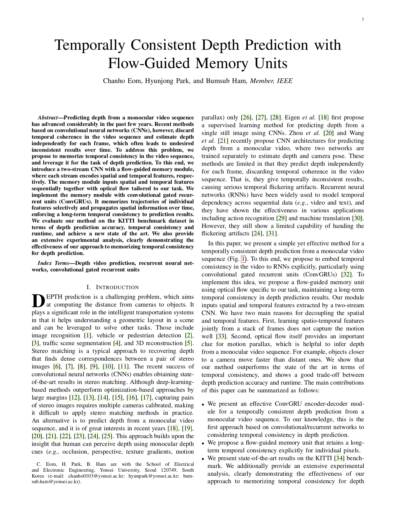

Temporally Consistent Depth Prediction with Flow-Guided Memory Units
Authors
Abstract
Predicting depth from a monocular video sequence has advanced considerably in the past few years. Recent methods based on convolutional neural networks (CNNs), however, discard temporal coherence in the video sequence and estimate depth independently for each frame, which often leads to undesired inconsistent results over time. To address this problem, we propose to memorize temporal consistency in the video sequence, and leverage it for the task of depth prediction. To this end, we introduce a two-stream CNN with a flow-guided memory module, where each stream encodes spatial and temporal features, respectively. The memory module inputs spatial and temporal features sequentially together with optical flow tailored to our task. We implement the memory module with convolutional gated recurrent units (ConvGRUs). It memorizes trajectories of individual features selectively and propagates spatial information over time, enforcing a long-term temporal consistency to prediction results. We evaluate our method on the KITTI benchmark dataset in terms of depth prediction accuracy, temporal consistency and runtime, and achieve a new state of the art. We also provide an extensive experimental analysis, clearly demonstrating the effectiveness of our approach to memorizing temporal consistency for depth prediction.
Overview of our architecture

Paper
|  |
C. Eom, H. Park, B. Ham Temporally Consistent Depth Prediction with Flow-Guided Memory Units [Paper] |